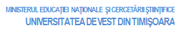
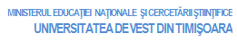

În vederea creşterii calităţii procesului didactic şi a îmbunătăţirii interacţiunilor dintre cadrele didactice şi studenţii Universităţii de Vest din Timişoara, vă rugăm să evaluaţi activitatea educaţională derulată în secţia dvs., într-un mod cât mai sincer şi mai obiectiv cu putinţă. Pentru aceasta, veţi avea de completat următoarea grilă de evaluare, precizând că vă asigurăm pe deplin anonimatul şi confidenţialitatea răspunsurilor dvs. Vă rugăm, de asemenea, să precizaţi (estimativ) şi frecvenţa dvs. de participare la fiecare curs/seminar în parte.
În cazul în care nu puteţi evalua activitatea unui cadru didactic din motive obiective sau ca urmare a participării dumneavoastră reduse la cursurile respective, vă rugăm să nu completaţi criteriile pentru disciplinele în cauză. Pentru criteriile de apreciere se va utiliza următoarea scală:
 
